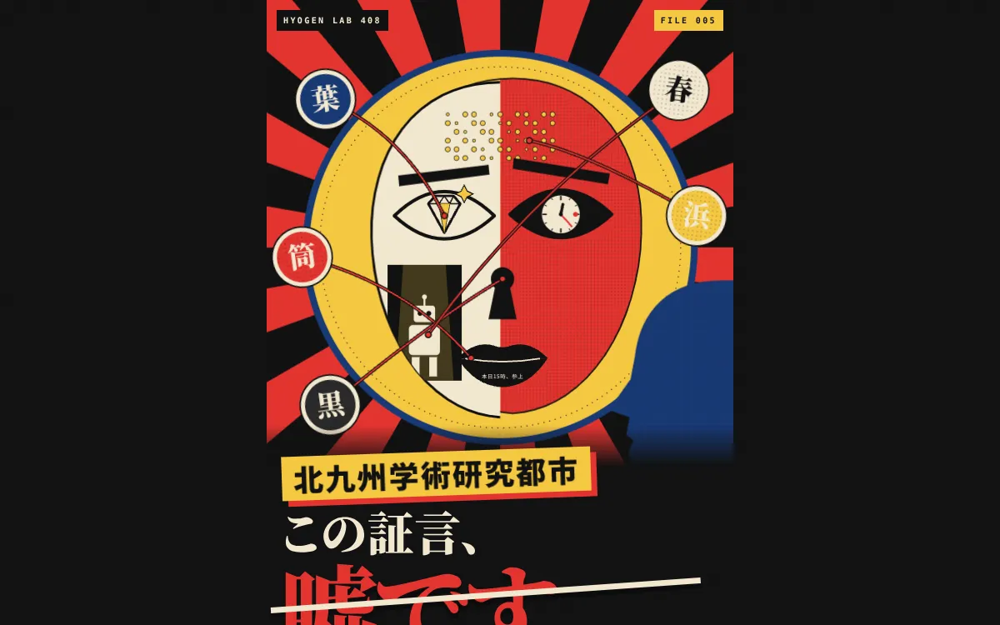
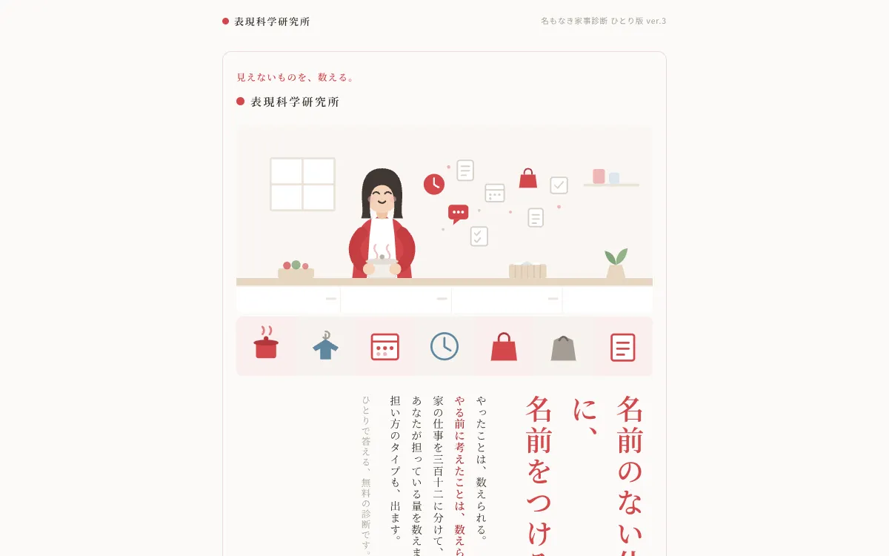

Collection作品から巡る
すべての作品と記録 31件
音楽
MUSIC曲をつくる・届ける。楽曲、テーマソング、配信。
-
体験できる

Archive活動の記録
声・放送・演技
VOICE / BROADCAST / ACTING声で演じる・語る・放送する。音声作品、番組、出演。
-
体験できる

Archive活動の記録
-
2020年
実施済み学習アプリの音声
立命館アジア太平洋大学（APU）「TOBIRA」
担当音声プロデュース・主演
APU 初の公式アプリ。入学前の国際学生のための日本語学習アプリで、音声をプロデュースし、主演しました。
-
 2019年
実施済みオーディオドラマ
2019年
実施済みオーディオドラマSweettimes & BerryBoy
担当総合プロデュース
マッチングアプリを題材にした恋愛オーディオドラマ。ハイスペックな未婚男性ひとりを、4人の悪女が狙う。iTunes Spoken Word部門で日本3位。
-

映像・視覚・空間
IMAGE / VISION / SPACE映像と目に見えるものをつくる。映像、映像の演出、空間。
-
体験できる

Archive活動の記録
- 2024年
物語・出版・ゲーム
STORY / PUBLISHING / GAMES物語を書く・本にする・遊べる形にする。書籍、辞典、ゲーム。
-
体験できる

-
体験できる

Archive活動の記録
- 2025年
教育・対話
EDUCATION / DIALOGUE人に教える・人と向き合う。レッスン、授業、講座、対話の道具。
-
体験できる

-
体験できる

Archive活動の記録
- 2022年
-
 2021年
2021年
- 2020年
- 2006年〜
研究・実験
RESEARCH / EXPERIMENTS測る・確かめる・論文にする。研究、実験、AIの評価。
-
体験できる

-
体験できる

-
体験できる
 No.11研究・実験完成
No.11研究・実験完成SHUKUYO ENGINE
Webツール・3言語
生まれた日に月がいた宿（本命宿）を、宿曜経の二十七宿から割り出すツール。四神、相性、原典と出典の比較まで。日本語・英語・中国語。
-
体験できる
Archive活動の記録
- 2026年10月1日
- 2026年10月1日
- 2026年9月
- 2026年
事業・社会での実践
PRACTICE IN BUSINESS AND SOCIETY表現を事業と社会の場で動かす。催し、商品、会社、セミナー。
-
体験できる

Archive活動の記録
-
 2024年1月8日
実施済みイベント
2024年1月8日
実施済みイベント表現者の祭典 ザ・フェス2024
担当企画・出演交渉・構成・当日運営
2024年1月8日（成人の日）、J:COM北九州芸術劇場 小劇場で開いた表現者の祭典。北九州市制60周年事業に認定。出演20組以上。
-
 2016〜2019年
2016〜2019年
この条件に合う作品はありません。条件を外すか、別の言葉でさがしてください。